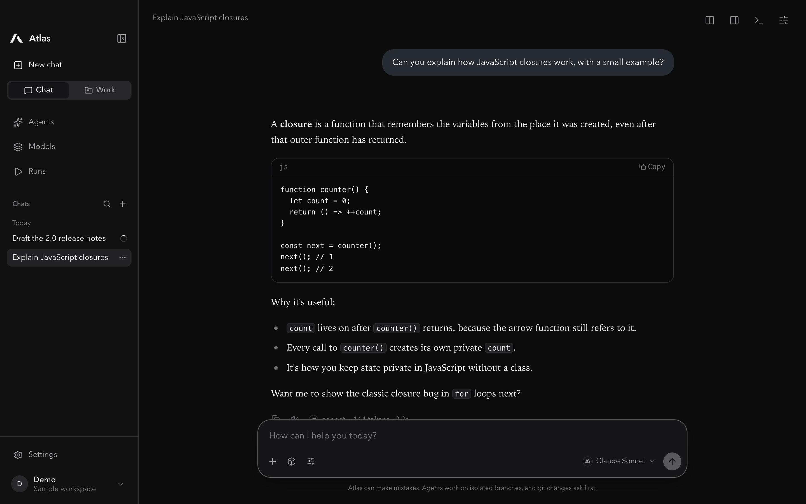
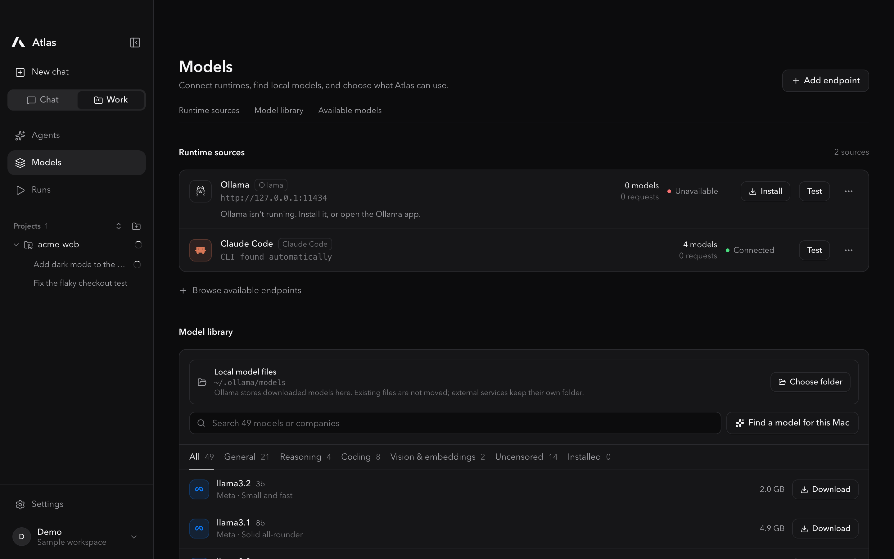
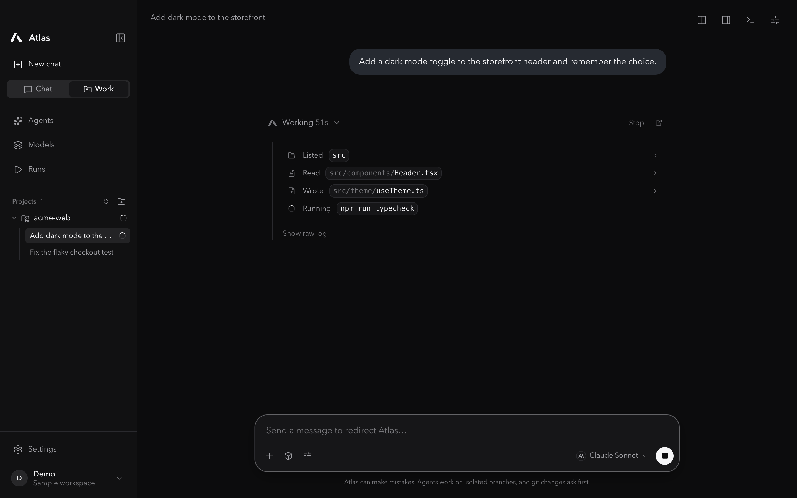
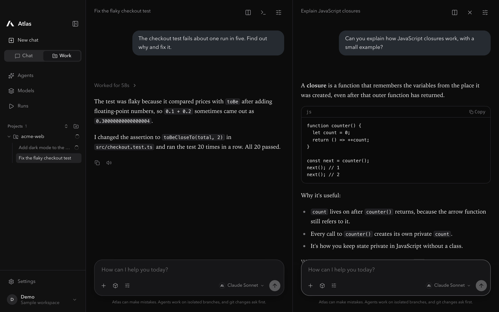
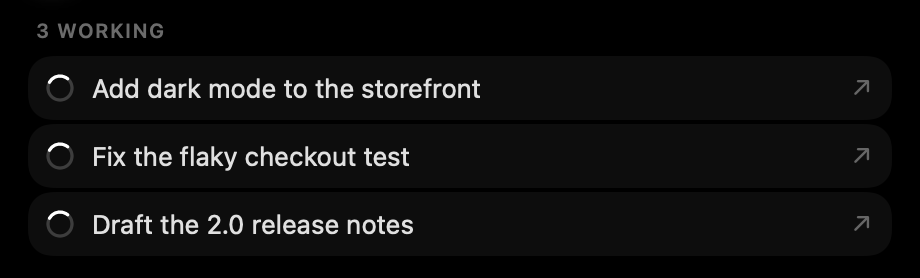
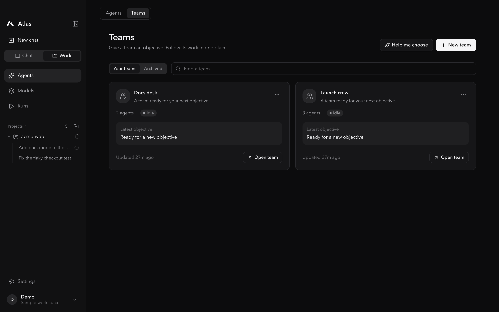

Picks up after a restart
If Atlas quits mid-task, the run resumes where it stopped, with its earlier changes still in place.
Atlas is a local-first macOS workspace for chatting with models, building in your projects, and running AI agents. Download it, connect a model, start.

Use a local model, connect an endpoint, or open Claude Code and Codex through their existing sign-in.
How Atlas works
Run one locally, connect any compatible endpoint, or use the Claude Code and Codex sign-ins you already have.

Answers read like a conversation. Attach files up to 2 GB and Atlas opens them for you.
In a project, Atlas reads, edits and tests on its own, and shows each step as it goes.

Parallel chats
Every chat runs on its own. Open up to four side by side, each with its own model, and switch away whenever you like. A spinner marks anything still working.

The Dynamic Island shows how many chats are working. Open it to see each one and jump straight to it.

Work in your projects
Open a folder and describe the job. Atlas reads, edits, and runs commands on its own branch without stopping to ask. Commits, pushes, and anything else that rewrites history wait for your OK, unless you asked for them.
Built to keep going
If Atlas quits mid-task, the run resumes where it stopped, with its earlier changes still in place.
Agents keep going until the job is done. If one gets stuck repeating itself, it stops on its own.
Big logs, zips, and datasets upload in the background. Atlas opens them with its tools instead of stuffing the prompt.
Tool calls are understood even when a model writes them as text, so more models can do real work.
See how much of the model's context window your chat is using, even for providers that don't report it.
If the window's content stops, Atlas reloads it, and your running work reappears.
Model choice, made clear
Use local runtimes, compatible endpoints, or the Claude Code and Codex sign-ins you already have. Find a model that fits your Mac, download it, and pick it right from the message box.
Explore model setup
Agents with a shared goal
Start from a team template, give each agent a model, and hand the team an objective. The lead plans, the others build and review, and you follow it all in one place.
Explore teams and agentsYour workspace stays yours
Atlas keeps chats, settings, uploads, and project state on your Mac. Local models keep everything on your machine. When you pick a hosted model or agent CLI, only that request goes to that provider.
Read the privacy detailsBefore you download
No Atlas account is needed. Download the app, connect a model, and start.
Yes. Connect a local runtime such as Ollama, LM Studio, MLX-LM, or another compatible server. If you choose a hosted model or CLI, its requests go to that provider.
No. Agents work on their own branch, and commits, pushes, merges, and resets wait for your OK unless your message asked for them.
The run picks back up the next time Atlas starts, and keeps the changes it already made.
Up to 2 GB. Small files go straight to the model; bigger ones are saved on your Mac and opened with Atlas's tools.
Yes. Atlas uses the installed CLI and its existing sign-in, model access, and usage limits.
Apple Silicon Macs running macOS 13 or newer.
Download Atlas, connect a model, and open your first project. No account required.